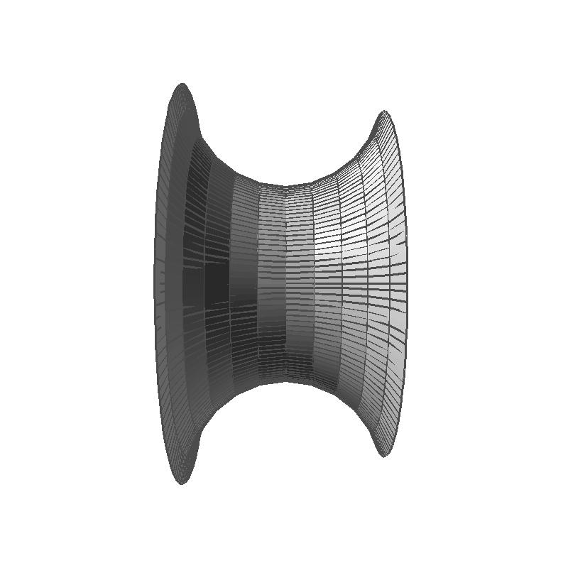

COS 426, Spring 2012
Edward Zhang, edwardz
List of Implemented Features
I believe that I have implemented the following features, which are worth a total of 30 points:
Required (Total 14):
Optional (Total 16):
Half-Edge Data Structure
The fundamental data structure I used was the half-edge data structure. I
added the following class to R3Mesh.h :
struct R3HalfEdge {
R3HalfEdge* twin;
R3HalfEdge* next;
R3MeshVertex* source;
R3MeshFace* face;
int id;
};
These fields are all as described in precept. I also added a R3HalfEdge*
edge field to each R3MeshFace object and a R3HalfEdge*
out field to each R3MeshVertex object.
In general, none of these fields are NULL. There were a few boundary cases that I made decisions for:
- Disconnected vertices: Disconnected vertices have no outedge. Therefore,
for these vertices
v->out == NULL
- Boundary edges: Boundary edges potentially have no twin edge. However, I
made the observation that boundaries must necessarily be closed - this means
that we can effectively add a "virtual" face to each closed boundary.
Thus, we can initialize twin edges to halfedges on a boundary with the
necessary pointers to next, source, twin. To denote a virtual
face, we set face = NULL
This make traversing boundaries
much easier.
Constructing the halfedge data structure is performed in the
R3Mesh::UpdateHalfEdges() function. This simply iterates over all
the faces and adds the relevant halfedges, as described in precept. There were
a couple subtleties, described below:
These considerations ensure that we have a well-formed half-edge data structure.
Note that we do not have to update this data structure if we are only translating
vertices - thus, smoothening, sharpening, and our fun transformation do not
require recomputing the halfedge data structure.
Demonstration of Implemented Features
meshpro input/ico.off output/writeup_Vertex.off
 |
| Vertex Normals |
each vertex and taking a weighted average of the normals of the faces.
This traversal was accomplished as follows: the first face for a vertex
v was v->out->face; subsequent faces were then
simply (v->out->twin->next)->face, finding the next outedge by
taking the next halfedge of the twin halfedge of the current outedge.
meshpro input/cheetah.off output/writeup_Random.off -noise %s
 |
|
|
| Input | Random Noise 0.1 |
Random Noise 0.2 |
| |
|
|
| Random Noise 0.4 |
Random Noise 0.8 |
Random Noise 1 |
Random noise was implemented as described in the spec:
we generated a random vector for each vertex, normalized it, and multiplied it
by the average length of the edges attached to the vertex and the supplied
factor. We then displaced each vertex by the resulting vector.
meshpro input/cheetah.off output/writeup_Smooth.off -smooth
| |
|
|
|
| Input | Smoothened x1 |
Smoothened x2 |
Smoothened x3 |
Smoothing required us to keep a separate copy of the input mesh
while we calculated new positions for the output mesh. We averaged the
vectors from each vertex to each of its immediate neighbors,
with weights determined by a Gaussian with sigma equal to the average length
of edges attached to the vertex. We then displace the vertex by this calculated
vector. The update occurs on the output mesh while
the averaging is computed on the copy of the input mesh.
meshpro input/ico.off output/writeup_Truncate.off -truncate %s
 |
|
|
| Input | Truncate vertices by 0.1 |
Truncate vertices by 0.2 |
| |
|
| Truncate vertices by 0.3 |
Truncate vertices by 0.5 |
| |
| Truncate vertices by .3 twice |
Truncate used the following algorithm
- Generate all new vertices - for each halfedge, we put a new vertex
t of the way from its
source to its
next->source. The only subtlety is, if t=0.5, then there
is only one vertex for each pair of halfedges. We keep track of new vertices
by using a map from halfedge to new vertex
- Generate faces for truncated vertices - each vertex on the old mesh now
has a new face with a number of vertices equal to the number of outedges it had
previously. Conveniently, these vertices correspond exactly to the halfedge to
vertec map we constructed while adding new vertices.
- Generate faces corresponding to old faces - now we iterate over each
face's halfedges. For each edge in the old face, there are two new
vertices (or only one if t=0.5). These vertices are simply the ones
that are associated with the face's halfedges and the twins of those halfedges
meshpro input/ico.off output/writeup_Divide.off -splitfaces
| |
|
|
|
| Input | Split faces 1 times |
Split faces 2 times |
Split faces 3 times |
Splitting faces made use of a subroutine to make Loop subdivision easier.
This subroutine was called R3Mesh::MidpointSplit(), which
split each face into K+1 faces (where K is the number of vertices on the face)
by connecting adjacent edge midpoints. This function worked in two passes:
in the first pass it iterated over all faces and created the edge midpoints and
the central face; the second pass iterated over each vertex of each face and
added the face corresponding to that vertex. This subroutine took one
parameter that, given the two endpoints of an edge, determined the coordinates
of the corresponding edge midpoint. For splitting faces, these coordinates were
simply the midpoint of the edge. However, for loop subdivision, a different
function was used.
meshpro input/ico.off output/writeup_Loop.off -loop
| |
|
|
|
| Input | Loop subdivision 1 times |
Loop subdivision 2 times |
Loop subdivision 3 times |
Loop subdivision used the R3Mesh::MidpointSplit() method, but
repositioned midpoints according to the Loop subdivision weights. After
performing the midpoint split, the old vertices still had to be repositioned
according to the Loop algorithm. The algorithm made use of the fact that
new vertices did not have outedges assigned yet to find the old vertices. Then,
for each old vertex we took the weighted average of its old position and the
old positions of each of its neighbors using the Loop weights. Boundary
vertices were detected because they had no associated face; it was
a simple matter of traversing the boundary to determine the neighboring
vertices.
meshpro input/blank.off output/writeup_Surface.off -revolution input/curv.off 0 0 0 0 0 1 %s
| |
|
 |
|
| Surface of revolution, step size 0.2 |
Surface of revolution, step size 0.1 |
Surface of revolution, step size 0.05 |
Surface of revolution, step size 0.01 |
A surface of revolution was created as follows: we kept two arrays of vertices
corresponding to adjacent rotation steps of the input curve. We then
continually updated them one step at a time, rotating each image by the
stepsize, and then connecting the two adjacent curve images to create
quad faces. Finally, we have to connect the initial image and the image after
the final step.
meshpro input/cheetah.off output/writeup_Gaussian.off
| |
|
| Gaussian Curvature | Gaussian Curvature |
Gaussian curvature in a triangular mesh was calculated using the formula
curvature = (angular deficit)/A, where A is some
area associated with the vertex. The angular deficit is simply 2π minus
the sum of the incident angles around the vertex.
The area associated with
the vertex was calculated per triangle adjacent to the vertex. We used the
method suggested by Magid et al. and Meek and Walton which simply
takes one third of the area of the incident faces (assuming a triangular mesh)
meshpro input/cheetah.off output/writeup_Inflate.off -inflate %s
| |
|
|
| Input | Inflated by 0.1 |
Inflated by 0.2 |
| |
|
|
| Inflated by 0.4 |
Inflated by 0.8 |
Inflated by 1 |
Inflate was a very straightforward operation - using the calculated vertex
normals and the R3Vector::Normalize() function, this
transformation wrote itself straight from the definition.
meshpro input/cheetah.off output/writeup_Fun.off -pinch 0.00001 0.154035 5.20818 %s
| |
|
|
| Input | Pinched by factor -2 around (0.00001 0.154035 5.20818) |
Pinched by factor -1 around (0.00001 0.154035 5.20818) |
| |
|
|
| Pinched by factor 0.5 around (0.00001 0.154035 5.20818) |
Pinched by factor 1 around (0.00001 0.154035 5.20818) |
Pinched by factor 2 around (0.00001 0.154035 5.20818) |
My Fun warp was a "pinch" effect. This was inspired by gravity, where the
"force" on each vertex is dependent on the distance from a specified point.
The pinch effect takes 4 parameters - the coordinates of a point, and a
factor that functions like the constant of gravitation. I found that a
force that dropped off with distance squared (like gravity really would)
did not create an interesting enough effect, so instead I shifted each vertex
by the factor divided by its distance from the center of gravity towards the
point. Note that a negative factor causes all vertices to be "repelled"
from the point.
meshpro input/cheetah.off output/writeup_Sharpen.off -sharpen
| |
|
|
|
| Input | Sharpened x1 |
Sharpened x2 |
Sharpened x3 |
Sharpening is actually exactly the same process as smoothing, except that instead of adding the average displacement vector we subtract it.
meshpro input/ico.off output/writeup_Bevel.off -bevel %s
| |
|
|
| Input | Bevelled by 0.1 |
Bevelled by 0.2 |
| |
|
| Bevelled by 0.3 |
Bevelled by 0.5 |
Although the bevel operation was presented as an add-on to the truncate
operation, it turned out to be easier to start again from scratch.
- Add one new face for each old face. As a side effect, this also adds all
new vertices. The new vertex positions are calculated by calculating the
position of the corresponding vertices for truncation, and then taking the
midpoint of the two relevant vertices. Note that each of these new vertices
is only added by one new face, and therefore we can associate each new vertex
with one old halfedge.
- Add one new face for each old vertex. As in truncation, we can map
between halfedges and new vertices.
- We finally add one new face for each old edge. To do this, we simply
iterate over all the old halfedges (processing each twin pair only once).
We can determine the vertices on these new faces because the halfedge to
new vertex map gives us the four vertices associated with
e, e->next, e->twin, e->twin->next
meshpro input/ico.off output/writeup_Star.off -starfaces %s
| |
|
|
| Input | Star faces, with factor -0.2 |
Star faces, with factor 0.1 |
| |
|
|
| Star faces, with factor 0.2 |
Star faces, with factor 0.5 |
Star faces, with factor 1 |
Star faces were formed by iterating over all the faces. We first created the
median without calculating its position, then in one iteration through the
vertices of the face we calculate the position of the median and add the faces
(two adjacent points on the triangle, combined with the median).
meshpro input/tetra.off output/writeup_Split.off -splitlongedges %s
| |
 |
|
|
| Input | Split edges longer than 0.6 times mesh radius |
Split edges longer than 1 times mesh radius |
Split edges longer than 1.2 times mesh radius |
Splitting edges longer than a certain length was accomplished using a series of
steps. I did implement this feature such that longer edges were split first,
using a priority queue. I used the following algorithm:
- Determine all of the original edges that are too long. Do this by
iterating over all twin pairs of halfedges and determining their length,
adding them to the priority queue if they are too long.
- For each edge in the priority queue:
- Queue both faces to be deleted
- Calculate the midpoint of the long edge and determine if the new
edges that would be formed to the midpoint are too long; if they are, then
add them to the priority queue
- For each of the old faces,
split them into two faces
The process of splitting the two old faces was rather convoluted, but in
essence involved creating the two new faces for each old face making use
of the old halfedges and only adding new ones when necessary. The messy
part was updating the twin edges for the split edge, since these edges
were common to all of the new faces.
Note that, by necessity, halfedges were updated as the algorithm proceeded.
We did this because the added edges might still have been longer than the
threshold, and processing these new edges meant that we needed the halfedges
for them.
meshpro input/cheetah.off output/writeup_Crop.off -crop 0 -1 1.5 %s
| |
|
|
| Input | Cropped to positive side of plane 1.5z - y + 1 = 0 |
Cropped to positive side of plane 1.5z - y + 0 = 0 |
| |
|
|
| Cropped to positive side of plane 1.5z - y + -1 = 0 |
Cropped to positive side of plane 1.5z - y + -2 = 0 |
Cropped to positive side of plane 1.5z - y + -4 = 0 |
Cropping was done by iterating through all the faces and determining if the
face intersected the cropping plane. This was accomplished by first iterating
through the vertices to determine whether each vertex was above or below the
plane. A face intersected the plane if some of its vertices were above
the plane and some were below. We determine the intersecting edge (the one
with one endpoint above and one endpoint below the line) and find the
intersection with the plane. This was the step that uncovered the bug with the
R3Plane constructors. We do have to make sure to store the
new vertex (using a map from Edge to vertex) so that we don't create each
new vertex twice.
Before
|
After
|
|
Cheetah on a diet: This movie was made using my pinch transformation - I chose a point in the middle of
the cheetah's belly, and animated the results of pinching it around that point from 0 to 3.6
|
Bugs in supplied code
There were two bugs in the provided code that I found.
Curvature bug
In meshview.cpp, the following lines are found:
double magnitude = curvature * mesh->Radius();
if (curvature < 0) glColor3d(magnitude, 0, 0);
else glColor3d(0, 0, magnitude);
Obviously, this will not display correctly because we cannot have a negative
value for the red component.
The fix is to simply add a negative sign:
if (curvature < 0) glColor3d(-magnitude, 0, 0);
R3Plane initialization bug
In R3/R3Plane.cpp, the R3Plane object has a normal vector. This
vector should be normalized to a length of 1. However, this normalization
is not performed in several constructors. This makes subsequent calls to
R3Plane::Point() fail to return a point on the plane
because this function assumes that the normal vector is normalized.
The fix is simply to add a call to v.Normalize() to any
R3Plane constructors that do not already do so.
Feedback
- How long did you spend on this assignment?
- A very long time, more than 20 hours
- Was it too hard, too easy, or just right?
- A lot of the features were very loosely specified. Although I enjoyed the
challenge of figuring out how to implement some of them, I thought others
were too vague so that I had no idea how to go about them efficiently
(especially the boolean operations, which would have required naively
looping over all pairs of faces).
- What was the best part of the assignment?
- The satisfaction of having half of my code compile cleanly AND
work perfectly the first time after writing a complicated function. This happened
three times :)
- What was the worst part of the assignment?
- Getting confused about Gaussian Curvature and having to read through
the terribly written, unhelpful paper that was supplied
- How could it be improved for next year?
- Include some more suggestions for how to approach some of the more
difficult features, as well as some reference runtimes
{kind=link}
{kind=link}
{kind=link}
{kind=link}
{kind=link}
{kind=link}
{kind=link}
{kind=link}
{kind=link}
{kind=link}
{kind=link}
{kind=link}
{kind=link}
{kind=link}
{kind=link}
{kind=link}
{kind=link}
{kind=link}
{kind=link}
{kind=link}
{kind=link}
{kind=link}
{kind=link}
{kind=link}
{kind=link}
{kind=link}
{kind=link}
{kind=link}
{kind=link}
{kind=link}
{kind=link}
{kind=link}
{kind=link}
{kind=link}
{kind=link}
{kind=link}
{kind=link}
{kind=link}
{kind=link}
{kind=link}
{kind=link}
{kind=link}
{kind=link}
{kind=link}
{kind=link}
{kind=link}
{kind=link}
{kind=link}
{kind=link}
{kind=link}
{kind=link}
{kind=link}
{kind=link}
{kind=link}
{kind=link}
{kind=link}
{kind=link}